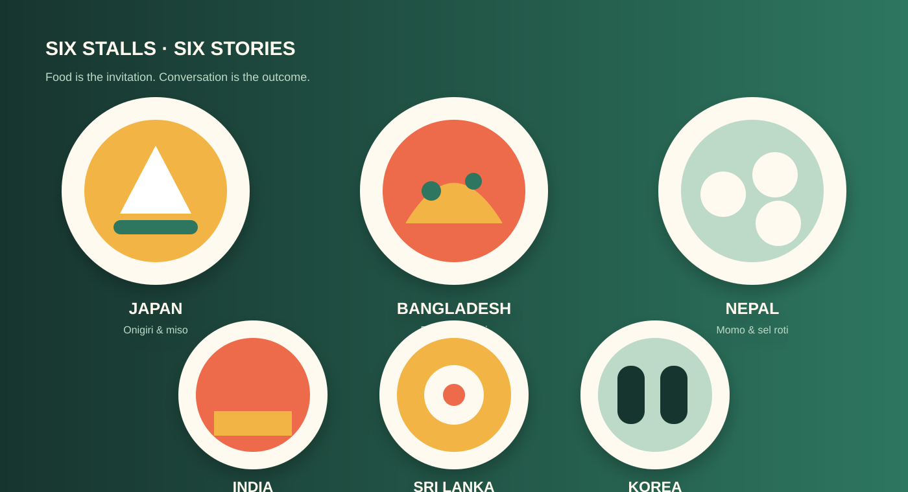

Japan
Onigiri & miso soup
A simple rice meal introduces seasonality, careful presentation, and everyday washoku.
Ask: “When do people usually share this food?”
Country stalls
Each digital stall pairs a featured food with the cultural memory, custom, and conversation behind it.

Japan
A simple rice meal introduces seasonality, careful presentation, and everyday washoku.
Bangladesh
Festive rice dishes and handmade sweets open stories about hospitality and family celebrations.
Nepal
Dumplings and rice bread show how food brings neighbours and relatives together.
India
Layers of spice and regional variety invite visitors to explore diversity within one country.
Sri Lanka
Crisp bowl-shaped pancakes and coconut sambol share the island's bright balance of flavour.
Korea
Popular shared foods introduce street culture, colourful ingredients, and eating together.
Learn the correct food name and listen to the person sharing its story.
Show ingredients, allergens, and dietary labels at every stall.
Invite visitors to sit with someone new at the shared table.
“A recipe can introduce a country, but a conversation introduces a person.”
— Festival message